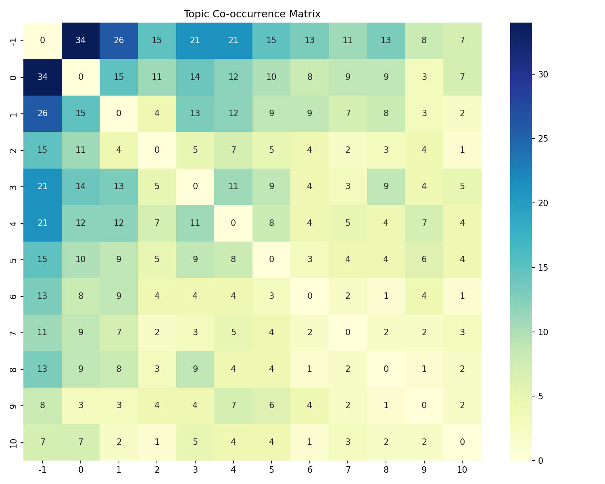
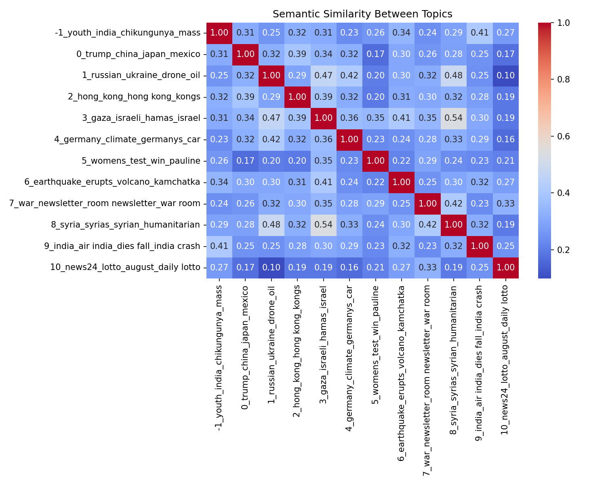

🌠Daily News Analysis - 2025-08-03
Generated: 2025-08-03 19:10:24 UTC | Articles: 490
🔠Top Topics Today
- 0_ukraine_russian_russia_war: 168 articles
- -1_trump_china_russian_youth: 137 articles
- 1_news24_germany_india_climate: 80 articles
- 2_gaza_israeli_hamas_israel: 56 articles
- 3_hong_hong kong_kong_lgbtq: 49 articles
📊 Topic Evolution Over Time
🔗 Topic Co-occurrence Matrix

🧠Semantic Similarity

↠Back to all days